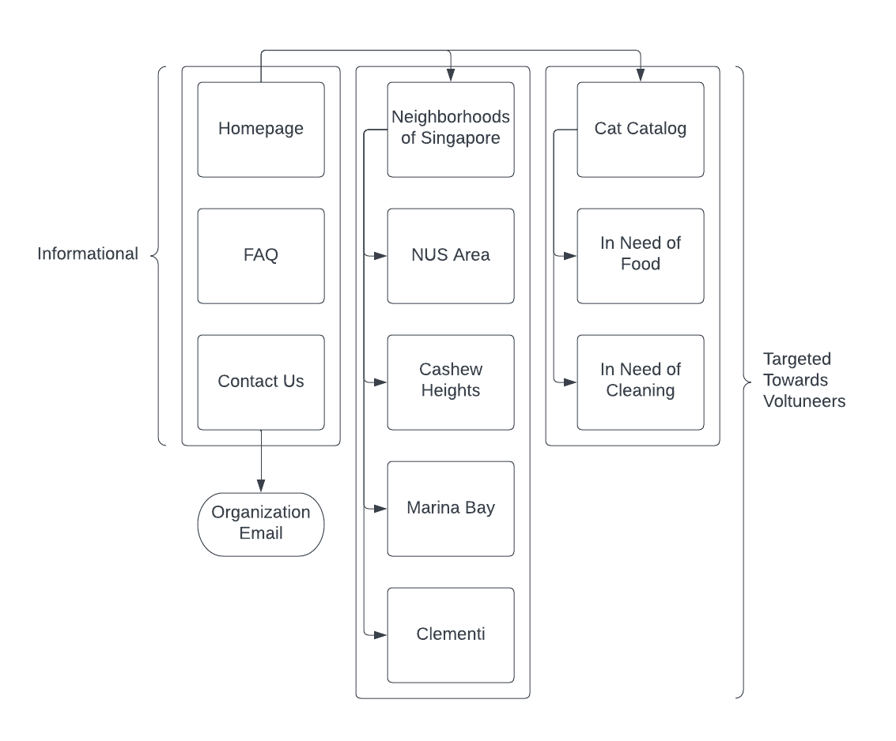

Project 1 Outline
Singatopore
Singatopore is a nonprofit organization whose purpose is to provide food, shelter, and nurturement for the stray cats of Singapore, specifically those roaming around the National University of Singapore (NUS) area.
The collective is led by cat advocate and well-regarded commutity volunteer Amanda Lim. Amanda is a senior business analytics student at NUS and aspiring software engineer who's mission is to improve the quality of life of the city's stray pets via a community-oriented approach.
Website Users
Singatopore's website would be targeted towards prospective members of the organization. Additionally, if the organization wished to direct any adoption or crowdsourcing efforts, the website would serve outside contributors.
Website Content
Perhaps the website's most useful function will be to catalog the community's documented stray cats—their names, pictures, physical measurements, attributes, and preferences. Through this information, the organization can inform proximate locals of the cats and empower them to develop closer relationships with the cats.
Client Information
As mentioned, Amanda Lim, the president of Singatopore, is leading the initiative to create Singatopore's website. Being in her final year of university and having to tend to her other presidential duties, Amanda has contacted me to develop the site.
Sitemap
Pages
Homepage
- Purpose: The homepage will contain general information about the organization, a few hand-selected cat pictures, and links to other pages on the site. It should serve to convince users of the legitimacy of the organization and should attract potential contributors.
- Audience: The public and potential contributors
- Content: General description, convincing cat pictures, and art/diagrams explaining the initiative to the public
- Data collection: N/A
- Interactivity: A slideshow containing the cat pictures and an animated layout that changes as the user scrolls
FAQ
- Purpose: To answer common questions about the organization, it's purpose, leadership, operational mechanics, data sources, income sources, etc.
- Audience: Those curious or weary about the organization
- Content: A question-answer format
- Data collection: N/A
- Interactivity: Perhaps an accordian of questions, each expanded by a clickable dropdown to reveal an answer
Contact Us
- Purpose: The Contact Us page should provide contact information (an email form and social media handles) in the event the site's content doesn't adequately answer a question.
- Audience: Those curious or weary about the organization
- Content: An email address, interactive form to submit an email, social media handles, and some optional art
- Data collection: The user's name, email address, and message should be collected.
- Interactivity: There will be a link redirecting to the organization email and a form submit button.
Neighborhoods of Singapore
- Purpose: The page should provide some context about which neighborhoods constitute the majority of Singapore, their characteristics, and information about what sort of cats roam them. For those not native to Singapore, this page will be especially helpful.
- Audience: Those using the site as a resource to care for the cats and non-natives attempting to visit the cats
- Content: The page should provide one to two pictures of each neighborhood, a brief description of its demographic, and a case study cat from each.
- Data collection: N/A
- Interactivity: Perhaps each neighborhood should be an expandable page so the page isn't too cluttered.
Cat Catalog
- Purpose: Those interested in the cats, either for amusement or prospective volunteer work, will find the page useful.
- Audience: Those interested in the cats.
- Content: The page should track every known feral cat of which much is known in Singapore. Ideally, each cat should have a name, picture, tailored statement, summary of preferences, etc.. Furthermore, there should be subpages categorizing the cats' needs.
- Data collection: N/A
- Interactivity: Perhaps cats could be presented in a slideshow.